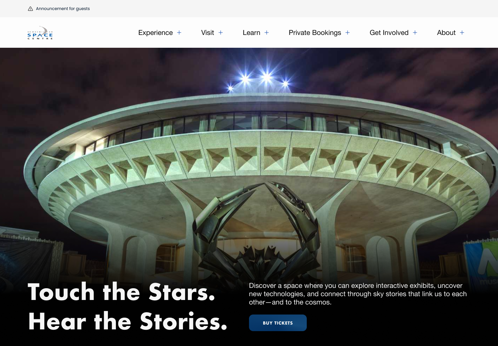
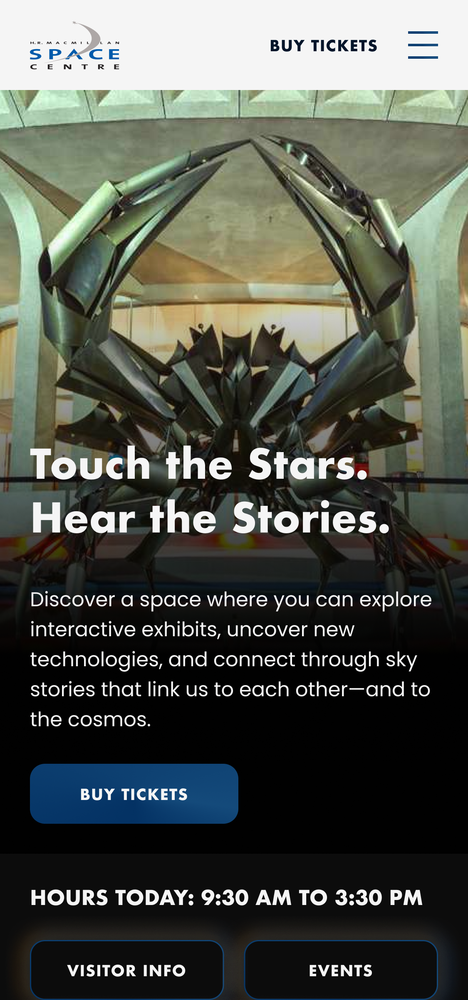
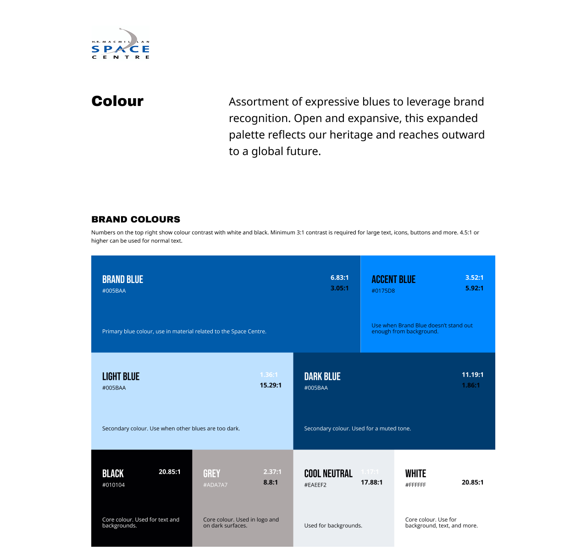
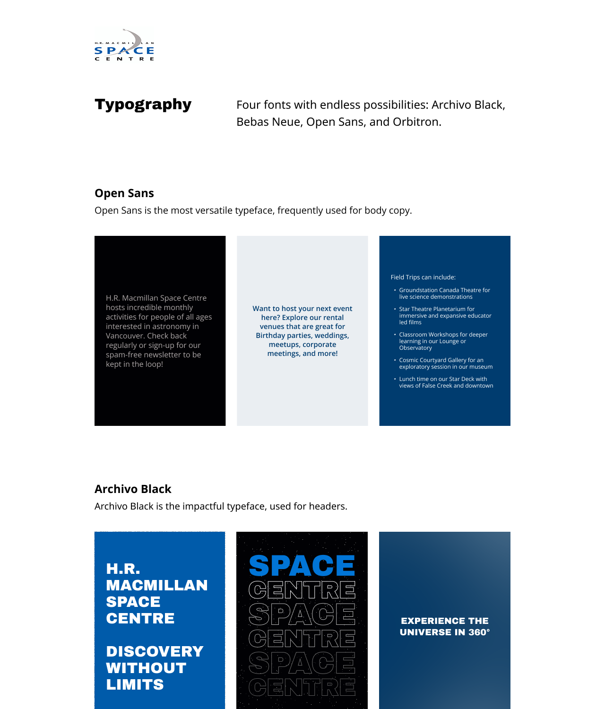
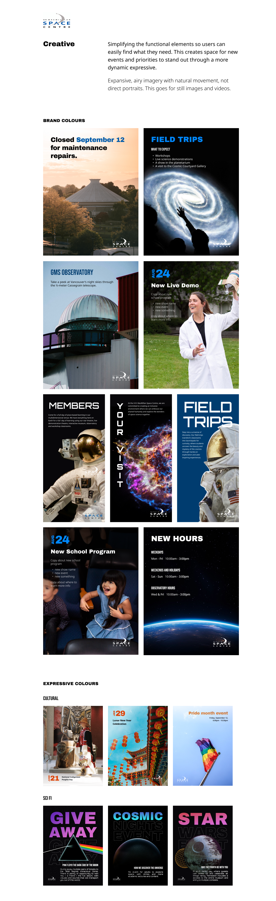
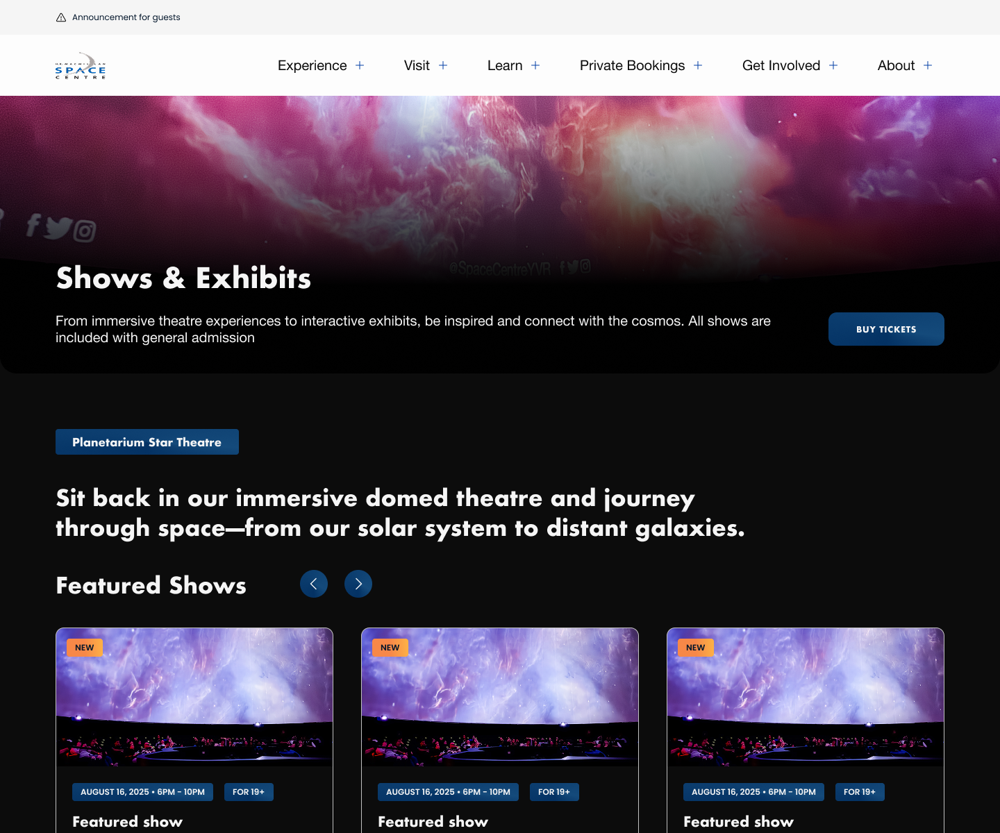
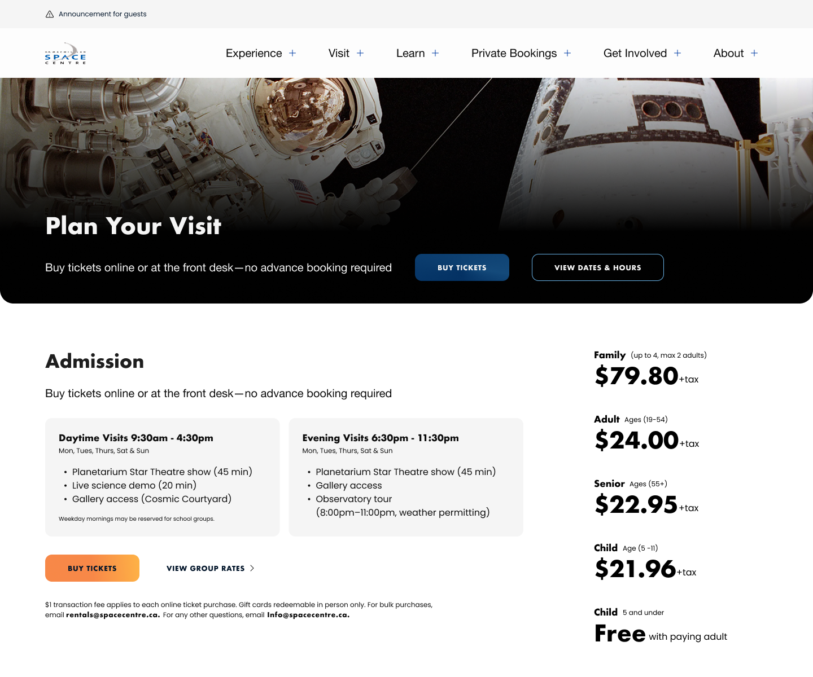
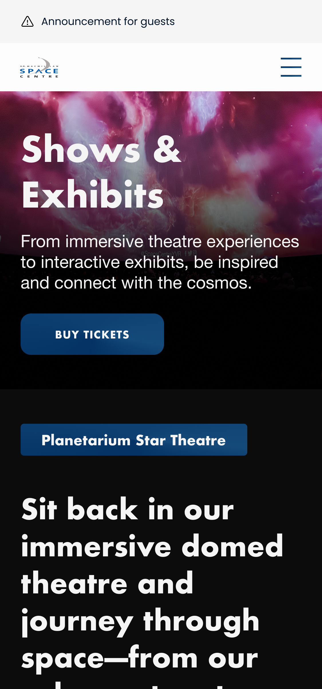

Building a Design System and Website from the Ground Up
Establishing a brand identity and design system from scratch, then redesigning 20 pages and templates around it — now live in production.


TLDR
H.R. MacMillan Space Centre had no defined visual identity and a website that hadn't kept pace, with the institution's long-term vision living in conversations rather than anything documented to design against.
Ran the engagement as a full design sprint — research, brand identity, design system — while leading a team of students through wireframes to launch across 20 pages and templates.
A complete brand identity and design system now live in production at spacecentre.ca across 20 pages, carrying consistently into social and campaign materials beyond the site itself.
Background
H.R. MacMillan Space Centre — Vancouver's planetarium and space science museum — had an established social media presence but no defined visual identity behind it, and a website that hadn't kept pace with the institution. I was brought on as a contract lead designer to build the brand and website from the ground up: a full design system, applied across 20 pages and templates, over a 12-month engagement.
The challenge
The Space Centre had some loose visual conventions for social media but nothing formalized beyond that, and nothing built for a 20-page website. I led two students through the project full-time, which meant the system had to be something I could hand off and teach, not just execute myself.
Challenge #1
Gathering a vision that wasn't written down anywhere
The Space Centre's long-term direction lived in conversations, not documentation. Before I could design anything, I needed to sit with the brand director and pull that vision into something concrete enough to design against.
Challenge #2
Building a system that had to outlive me
With 20 pages and recurring templates like the blog, the site needed to hold up long after the engagement ended — usable by the students I was leading through it, and by whoever maintained the site after I left.
Goal
A brand strong enough to stand on its own
Success meant any future page, post, or campaign could be built confidently within the system — without someone re-deciding what the Space Centre looks like every time.
The Discovery
Running it as a full design sprint
I structured the project like a full design sprint rather than jumping straight to visuals: competitive analysis against other science centres and museums, how-might-we framing sessions, and a heuristic audit of the existing site to pinpoint what was and wasn't working. Alongside that, I met directly with the Space Centre's brand director to understand their long-term vision for the institution — context that shaped a brand identity meant to hold up well beyond this one redesign.
Research insight
Separating the content problem from the identity problem
The heuristic audit made clear that the site's navigation and content structure were a distinct problem from its lack of visual identity. Solving them separately — structure first, identity in parallel — meant the new templates wouldn't just inherit the old inconsistency once a brand was layered on top.
The Process
From wireframes to a system, in phases
The project moved through three phases, each handing off cleanly into the next.
Phase 1
Wireframes across the sitemap
Student designers on my core team produced early low-fidelity wireframes covering the full 20-page sitemap, which I reviewed and directed before we moved to visual design.
Phase 2
High-fidelity design, together
I worked directly alongside two students to turn those wireframes into high-fidelity designs across every page and template, aligning with stakeholders as the designs took shape.
Phase 3
QA and brand identity
As the build came together, I QA'd the live site against the designs while leading development of the full visual brand identity — the piece that would tie every page and future post together.
The Vision
A brand identity built on their long-term vision
Rather than designing a brand in isolation, I anchored the identity in conversations with the brand director about where the Space Centre saw itself heading. From there, I built out moodboards to explore direction, aligned with stakeholders on one, and developed it into the full visual identity — colour, type, and imagery — that now underpins the design system across all 20 pages and templates.



Leading the team
Mentorship ran at two levels across the four students involved in the broader program.
Core team
Leading two designers end-to-end
Two students worked with me through the full project, from discovery through delivery — handing off the initial wireframes, then designing every page alongside me through to final QA.
Extended mentorship
Coaching two more on UX and design craft
I also mentored two additional students outside my core team, giving them regular feedback on their UX and visual design work throughout the engagement.
Key Decisions
Two calls shaped how this project actually got built, not just how the finished brand looks.
Layer the brand onto the existing structure vs. fix structure first
With a 12-month engagement and a brand to build from zero, the faster path was applying new visual identity directly onto the site's existing navigation and content structure as each page came up.
The heuristic audit showed the content and IA problems were distinct from the identity problem, so I solved them separately — structure first, identity built in parallel.
More sequencing to manage across the engagement — in exchange for templates that didn't just inherit the site's old structural inconsistency once a brand was layered on top.
One mentorship track vs. two
With four students involved across the program, applying one consistent level of guidance to all of them — either full direction or light feedback — would have been simpler to run.
Split into a core team of two, led end-to-end from wireframes through final QA, and a separate track of two more students coached with lighter feedback on their UX and craft outside the core project.
Running two different modes of leadership at once instead of one — in exchange for shipping a real project with a core team while still mentoring twice as many designers.



Impact
With a design system in place, the Space Centre can add new pages, posts, and campaigns without re-deciding what the brand looks like each time. The identity now carries consistently from the website through to social, which gives the institution more credibility with every visitor who lands on the site. The redesign is live at spacecentre.ca today — 20 pages and templates built on a brand that didn't exist a year earlier.
Takeaways
Designing a brand from nothing is freeing and disorienting at once
Starting from zero meant no existing constraints to react against, which sounds easier than it is — without a brand to anchor to, every decision was mine to justify. Grounding the identity in the brand director's own words about where the Space Centre was headed gave me something firmer to design against than my own taste.
Leading is a different skill than designing
Running two students through the full project — wireframes to QA — meant turning my own process into something teachable in real time, while a separate pair of students needed a lighter touch of feedback instead of direction. In the future I'd build in a clearer kickoff for the core team specifically, since a lot of the early back-and-forth was me figuring out how much to lead versus how much to let them lead themselves.